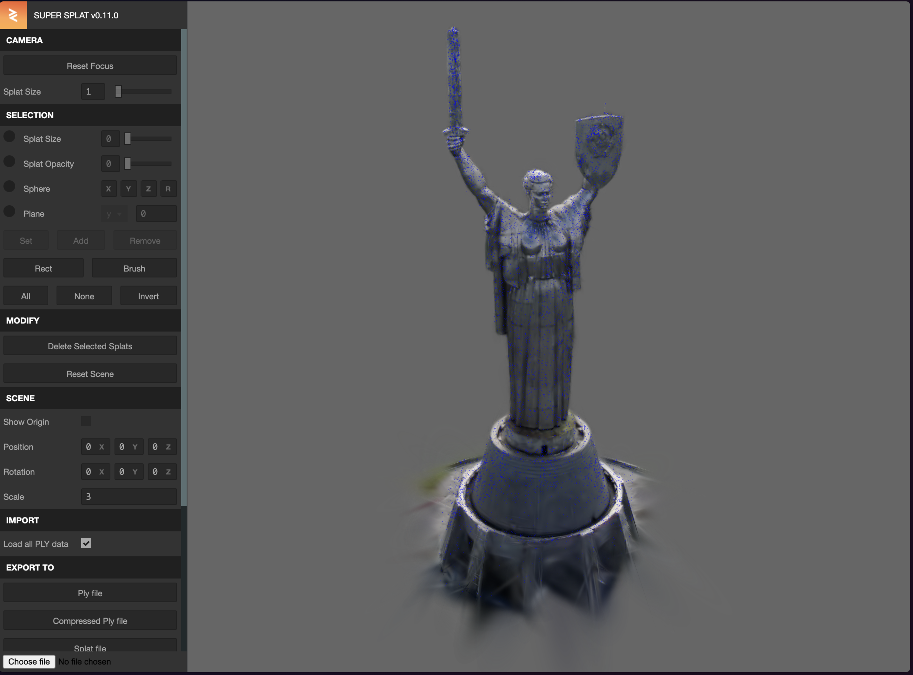

You’ve probably seen this supercool demo by Max @Aximoris created with new Spline editor feature:
This new @splinetool feature (importing Gaussian Splatting) and portal card effect is a perfect match! You should try it!!https://t.co/H3AdPNItb2 pic.twitter.com/xi973iGMXG
— Max (@Aximoris) November 14, 2023
There is a nice video tutorial by Max on how to do that with Spline. But being a developer myself i would like to have more control over scene, so i decided to replicate it with the help of React Three Fiber and Three.js. Let's dive into this effect right away!
Thanks to amazing R3F community there is a MeshTransmissionMaterial in the Drei repository now. I also took a model to put behind that glass object. Keep in mind that for glass and such materials it is superimportant to add environment lighting(hdr,exr), so you will see all those nice reflections.
Now, there is our first issue with this. We shouldnt be seeing the object behind the glass. Only through the glass.
The way this material works, it renders sculpture twice: first as a texture for glass, second time as an actual object.
There is an easy way to fix this, just by hiding the object for the final render.
useFrame((state) => {
sculpture.current.visible = true;
glass.current.visible = false;
// this buffer will be used by MeshTransmissionMaterial
state.gl.setRenderTarget(buffer);
state.gl.render(state.scene, state.camera);
// we need this to switch rendering back to "on screen"
state.gl.setRenderTarget(null);
sculpture.current.visible = false; // hiding sculpture
glass.current.visible = true;
});
And now using Transmission material props we can set the “behind-the-glass scene” for it manually, like this:
Not only we achieve the portal effect then, we also significantly optimise the whole scene rendering! Because we only render object once!
This is what we have now:
3D portal is interesting, but let’s go further, and use Gaussian Splatting!
If you are new to this, i really recommend watching good explanation videos . TLDW: it is a new way to render 3D-scenes.
And in our case it actually opens up a whole real world to be integrated into our 3D scenes. In the original Spline scene, the scan of a human was used. I thought this is a nice opportunity to showcase one of the symbols of my beloved Kyiv.
The problem is, the monument is over 100 meters tall. And you cant fly civil drones in Ukraine. Literally the very moment im writing this, air defence is working hard in my city.
So, i went to youtube and found a 4 years old footage of the monument. I uploaded the video to Luma app(you could also use Polycam). And here is the result:
Woah! It amazes me that some old videos could help you to recreate objects pretty accurately. But the quest wasnt finished, there is a major part of city landscape in the scan too. And if i download the "splat" file, it is 260Mb, not really usable in the web environment.
Thats where the editor from Playcanvas developers helps. You can just remove splats you dont need.
So after cleaning it up the splat file is only 800kb, which is pretty normal for such 3D model.
Now i can finally export it to .splat format, which could be used with three.js!
There has been a lot of work on porting this rendering technique to three.js recently. And just last week, Paul Henschel himself ported this to React Three Fiber! If you dont know who Paul is, well, i recommend you to go right now and subscribe to him, you’d be right on the frontier of all things 3D on the web happening!
So i took an opportunity and used his latest codesandbox to incorporate my edited .splat file into my scene. It couldnt look easier code wise:
And here is how it looks like:
And we are done! I also added an additional Box with stripes, to add some depth. It has side="backside" enabled, so we only see the insides of it, that adds to illusion.
I’d be curious what you come up with, and how you can extend these demos, let me know on twitter!
It mesmerises me how many wonderful people are involved in such a fast paces spread of this new technology. I dont think i can even mention every single one of them, so i just recommend you to keep supporting all of the involved parties and open source in general. Because it is what makes this happen to us.
It is also unbelievable, that i can basically record a random video on the phone, and have those real life objects in my three.js scene in an hour, looking good! Isn’t that crazy?
##